Galeri
Tangkapan layar prototipe
Diambil dari prototipe yang berjalan dengan simulator kendaraan, Oktober 2026. Klik gambar untuk ukuran penuh.
Aplikasi penumpang
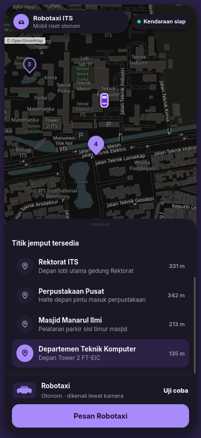
Pemesanan: titik jemput tetap di peta kampus dan daftar jaraknya
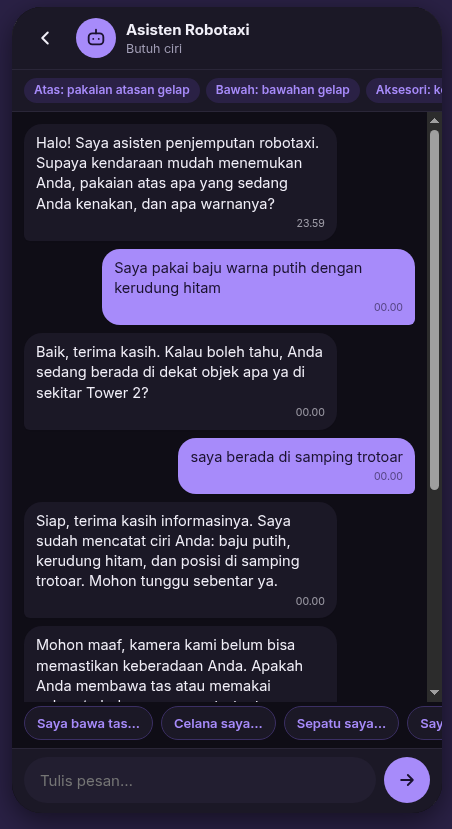
Percakapan: agen menanyakan ciri yang masih kurang
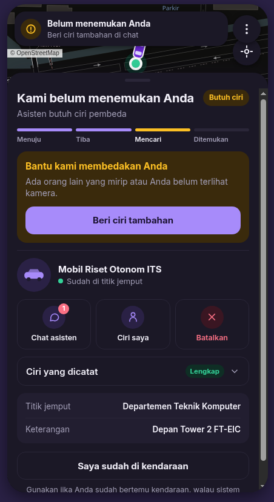
Status kendaraan dan tahapan penjemputan
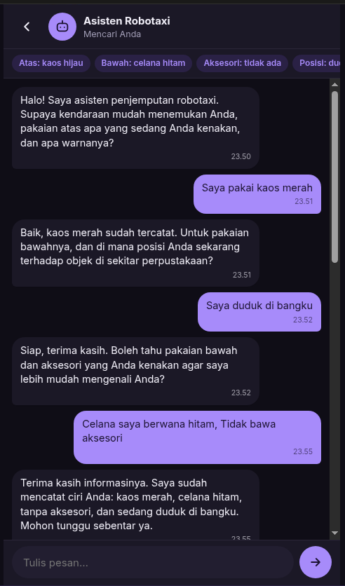
Pengumpulan ciri awal; ciri tersimpan tampil sebagai label di atas percakapan
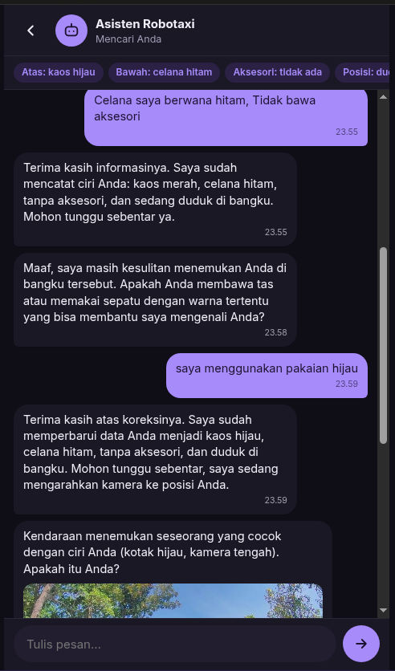
Penumpang mengoreksi warna pakaian, lalu foto bukti dikirim
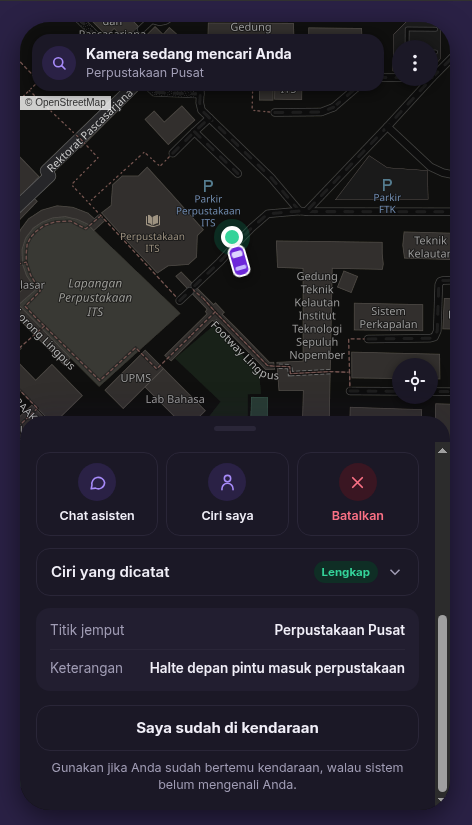
Kendaraan tiba dan mencari penumpang
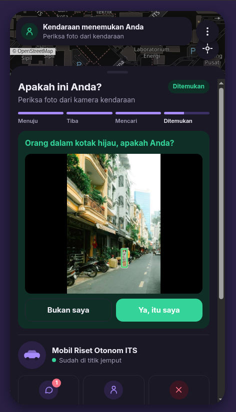
Foto bukti dengan kotak hijau: "Ya, itu saya" atau "Bukan saya"
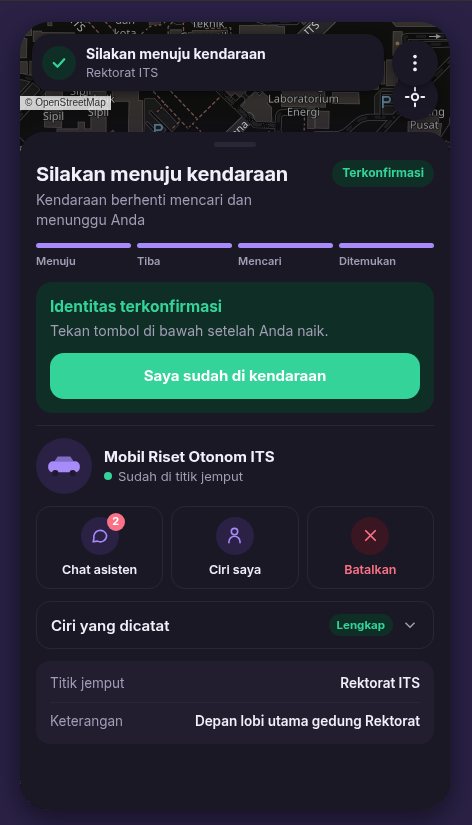
Identitas terkonfirmasi, pemeriksaan VLM berhenti
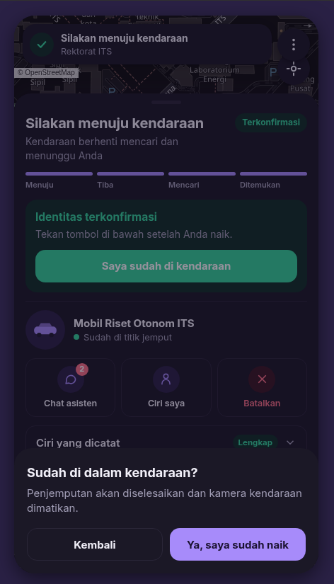
Konfirmasi penumpang sudah di kendaraan
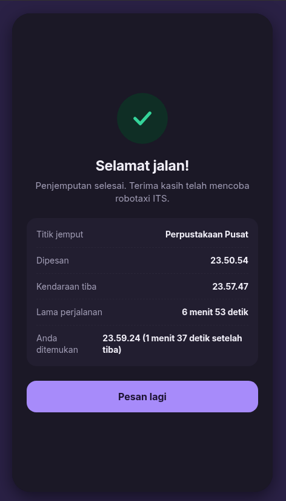
Ringkasan penjemputan selesai (Perpustakaan Pusat)
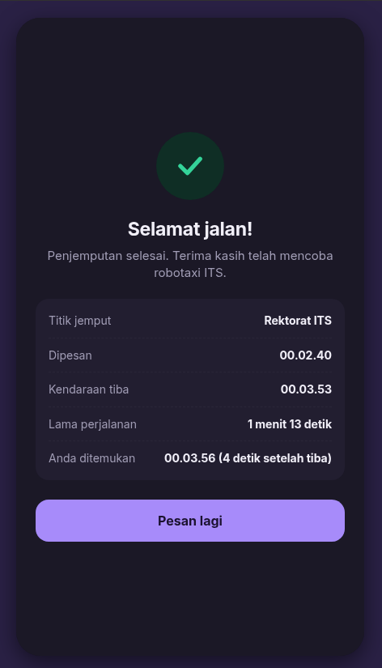
Ringkasan penjemputan selesai (Rektorat ITS)
Simulator kendaraan
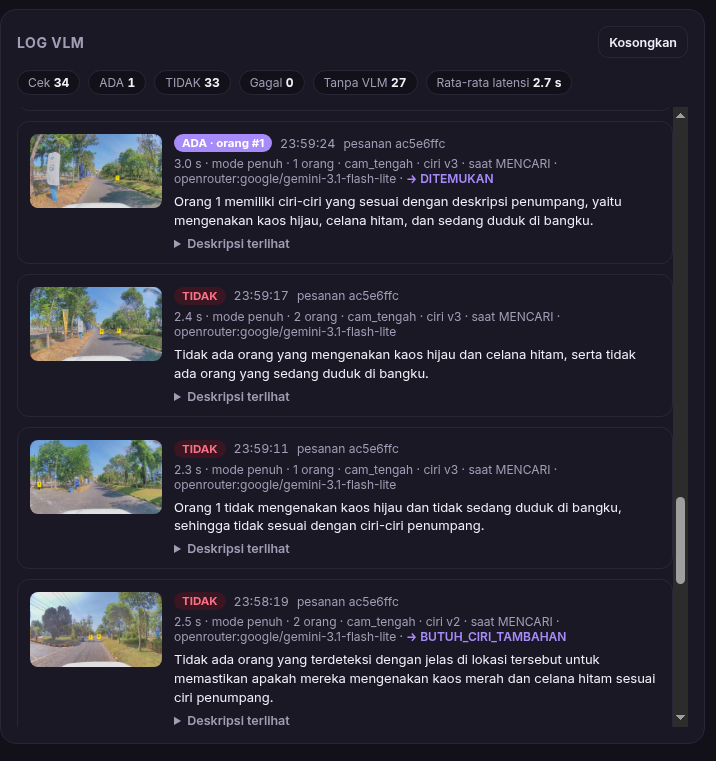
Log VLM terpisah dari log umum: keputusan, nomor kandidat, alasan, dan latensi
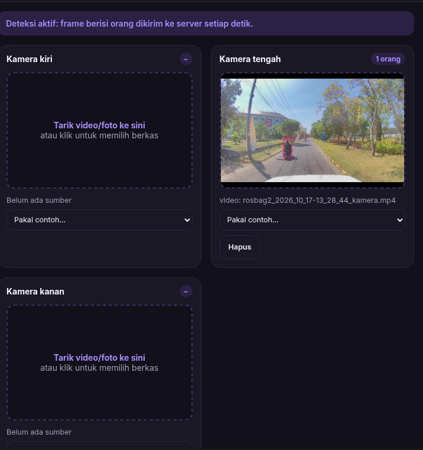
Panel kamera dengan YOLO kelas orang pada rekaman kamera tengah mobil riset